HUMA 조립 설명서
HUMA는 프리두이노(Freeduino)를 기반으로 한 아두이노 호환 보드입니다. 예전 라디오 키트를 조립하듯 모든 부품을 손수 납땜하며 만들 수 있도록 설계되었습니다. 기초적인 납땜 경험만 있다면 누구나 완성할 수 있습니다.
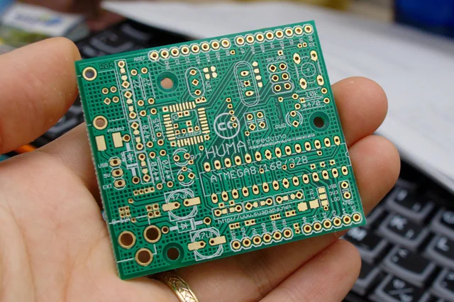
납땜이 오랜만이거나 익숙하지 않다면 만화로 배우는 납땜을 먼저 살펴보세요.
HUMA는 오픈소스 하드웨어입니다. 조립 및 사용 과정에서 발생하는 보드 손상이나 인적·물적 피해에 대해서는 어떠한 책임도 지지 않습니다.
회로도, 아트워크 및 관련 문서는 모두 CC BY-SA 라이선스를 따릅니다.
도구 및 준비물
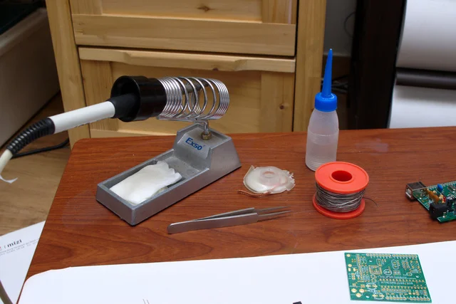
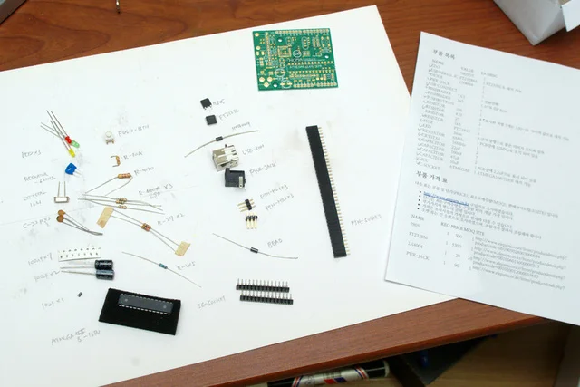
HUMA PCB와 부품 목록을 대조하며 필요한 부품이 빠짐없이 준비되었는지 확인합니다.
납땜하기
부품은 높이가 낮은 것부터 높은 것 순으로, 기판의 안쪽에서 바깥쪽으로, 열에 강한 부품부터 약한 부품 순으로 납땜하는 것이 기본 원칙입니다.
먼저 높이가 가장 낮은 3.3V 전원용 SMD 커패시터부터 납땜해 보겠습니다. SMD 커패시터는 플러스(+) 극 쪽에 띠 모양 표시가 있습니다.
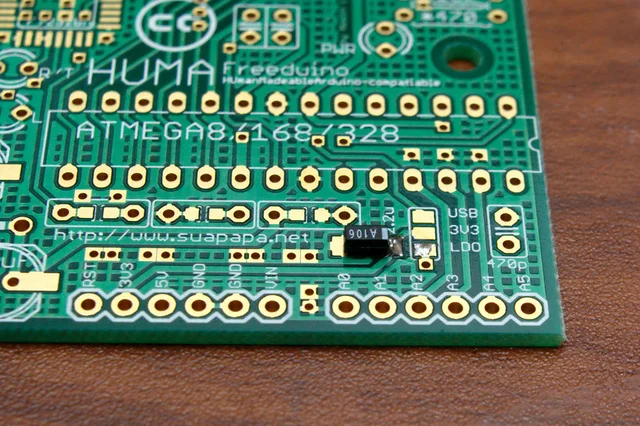
보드의 2.2u 글자 방향으로 띠가 오도록 위치를 맞춘 뒤, 한쪽 접점을 먼저 납땜해 고정합니다.
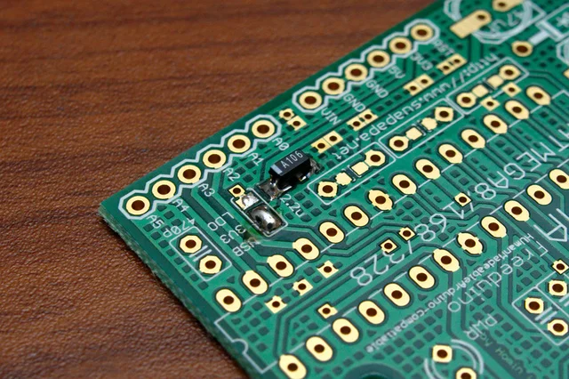
자리가 잡히면 반대편 접점을 마저 납땜합니다. 이어서 커패시터 옆의 솔더 점퍼에 납을 올려 USB와 3V3 패드를 연결해 줍니다. 이렇게 하면 USB 시리얼 칩(FT232BL)이 공급하는 3.3V를 보드 전원으로 사용하게 됩니다.
다음으로 USB-시리얼 변환 칩인 FT232BL(또는 FT232BM)을 납땜합니다. SMD IC 납땜 경험이 없다면 SMD 납땜하기 가이드를 먼저 참고하세요.
보드에는 100nF 커패시터가 총 7개 들어갑니다. SMD(1608 규격)와 원형 디스크 모양의 세라믹 커패시터 중 원하는 부품을 골라 장착할 수 있도록 패드가 겸용으로 마련되어 있습니다. SMD 커패시터를 준비했다면 지금 납땜해 줍니다. 100nF 커패시터는 극성이 없으므로 방향을 구분하지 않아도 됩니다.
여기까지 마쳤다면 보드 조립에서 가장 까다로운 SMD 부품 납땜이 끝났습니다.
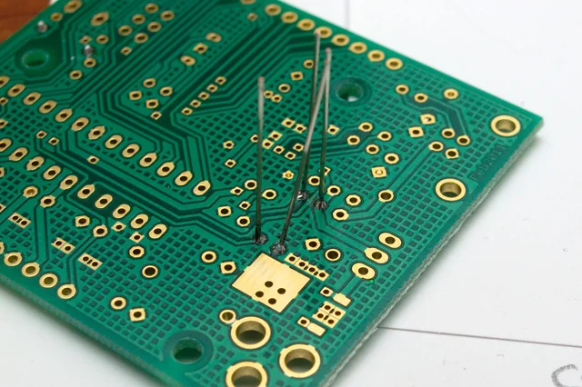
보드에 표기된 저항값에 맞추어 저항들을 꽂고 납땜합니다. 1/4W 또는 1/8W 규격의 일반 저항(정밀도 5%)을 사용하면 됩니다. 높은 정밀도(1%)의 저항은 가격이 더 비싸지만, 이런 디지털 회로에서는 뚜렷한 장점이 없습니다. 1/2W 규격 저항은 가격은 같으나 크기가 커서 패드에 꽂기 번거롭습니다.
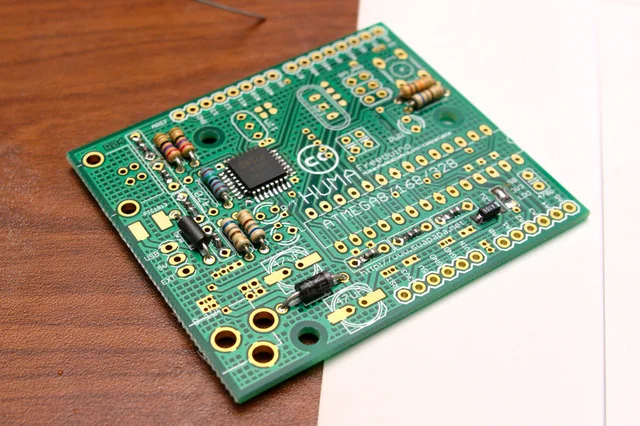
전원 잭 옆의 다이오드와 USB 커넥터 아래의 비드(Ferrite Bead)를 납땜합니다. 비드 대신 정품 아두이노처럼 PTC0805 자리에 복구형 퓨즈(Resettable Fuse)를 장착할 수도 있습니다. 비드와 퓨즈 중 편한 부품을 하나 골라 장착하세요.
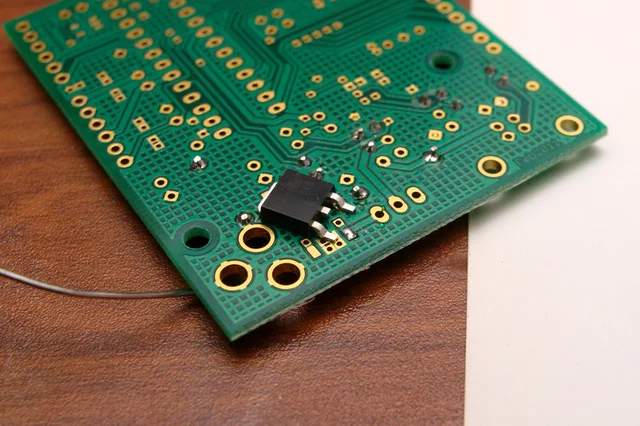
보드를 뒤집어 5V 레귤레이터인 7805를 납땜합니다. 먼저 한쪽 다리 패드에 납을 살짝 올려 위치를 잡은 뒤,
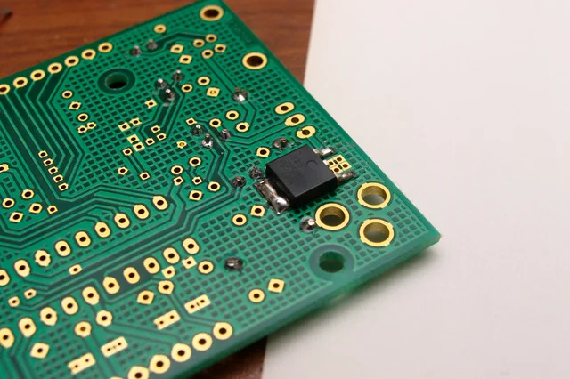
자리가 반듯하게 잡히면 나머지 패드들을 마저 납땜합니다.
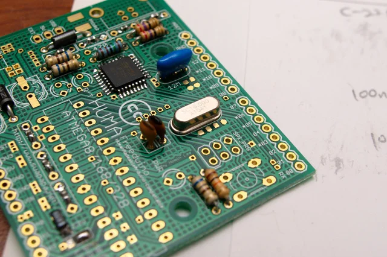
레조네이터(파란 부품)와 크리스털(은색 부품)을 납땜합니다.
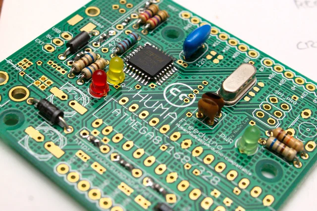
3mm LED 3개를 연결합니다. LED는 극성이 있으므로 방향을 잘 맞추어 장착해야 합니다. 보드 표기(R/T, L, PWR) 쪽으로 짧은 다리(또는 테두리가 깎인 면)가 오도록 꽂아 줍니다.
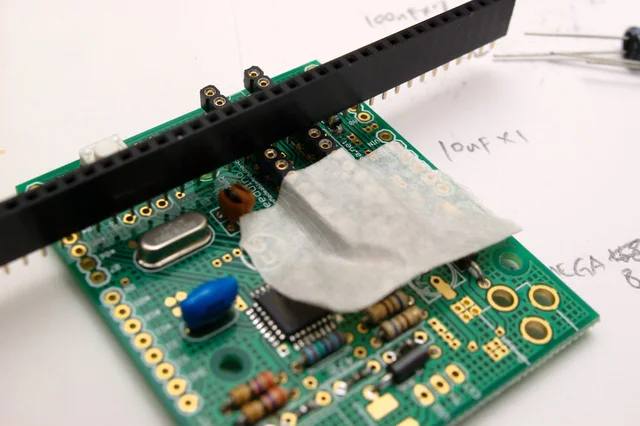
ATmega용 IC 소켓을 장착합니다. 사진에서는 필요한 핀 수만큼 잘라 쓰는 소켓을 사용했습니다. 소켓이 들뜨지 않고 반듯하게 붙도록 마스킹 테이프와 핀헤더 소켓으로 임시 고정한 뒤 납땜했습니다.
앞서 SMD 커패시터를 장착하지 않았다면, 100nF 세라믹 커패시터 7개를 지금 납땜합니다.
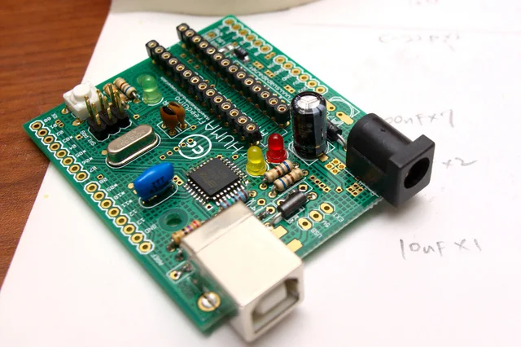
47uF~100uF 규격의 전해 커패시터(또는 솔리드 커패시터)를 장착합니다. SMD 타입도 쓸 수 있도록 패드가 겸용으로 마련되어 있습니다. 사진처럼 커패시터 몸통의 하얀 띠(마이너스, -극)가 보드 실크의 평평한 면을 향하도록 방향을 맞춰 장착합니다.
이어서 USB 커넥터, 전원 잭, 리셋 버튼 스위치, 6핀 ISP 핀헤더 등을 납땜합니다.
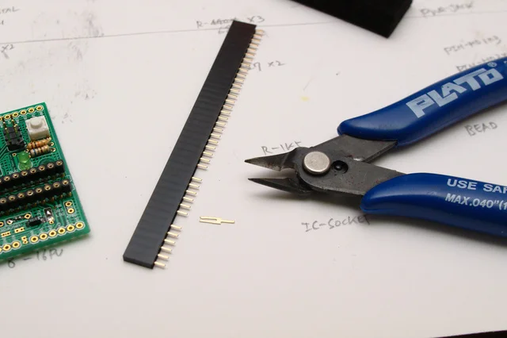
아두이노 실드를 꽂을 6핀과 8핀 핀헤더 소켓이 각각 2개씩 필요합니다. 긴 규격의 소켓을 구입했다면 사진처럼 자를 위치의 핀을 니퍼나 플라이어로 뽑아낸 뒤,
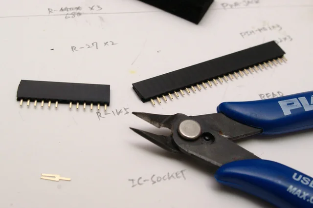
핀이 빠져나간 자리를 잘라서 사용하면 됩니다.
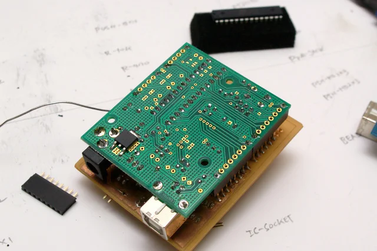
아두이노 실드가 있다면 소켓 위에 꽂아두고 작업할 때 훨씬 수월합니다. (실드가 없다면 테이프로 수직을 맞춰 임시 고정합니다.) 핀헤더의 양 끝 핀을 먼저 납땜해 위치를 잡은 뒤, 실드를 분리하고 나머지 핀들도 마저 납땜합니다.
납땜 작업이 모두 끝났습니다. IC 소켓의 홈 방향에 맞춰 ATmega 칩을 조심스럽게 끼웁니다.
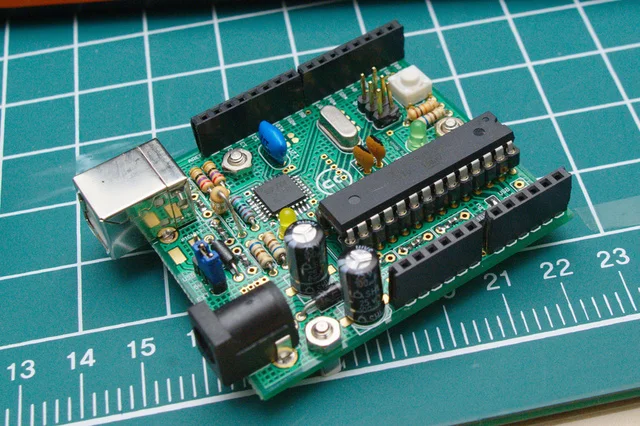
전원 선택용 점퍼(USB / 외장 전원)를 꽂아 완성을 마칩니다.
부트로더 굽기
부트로더가 미리 구워진 ATmega 칩을 구입한 것이 아니라면, 최초 1회는 AVR ISP 프로그래머를 사용해 아두이노 부트로더를 직접 구워주어야 합니다.
미리 빌드된 부트로더(hex 파일)는 아두이노 IDE 설치 경로의 다음 디렉터리에 있습니다.
- ATMEGA8:
hardware/arduino/bootloaders/atmega8 - ATMEGA168, ATMEGA328:
hardware/arduino/bootloaders/atmega
부트로더를 굽는 구체적인 방법은 다음 링크들을 참고하세요.
- Arduino S3V3 bootloader
- Arduino 시작하기 - 작은태양님